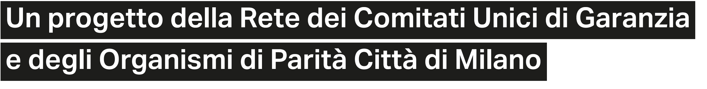

CoOrdinati®?
Oggetti impossibili per ricordarci ciò che è possibile
Una collezione di strumenti provocativa per ribaltare le dinamiche lavorative.
«Noi plasmiamo i nostri strumenti e poi i nostri strumenti plasmano noi.»
Gli strumenti CoOrdinati® sono pensati per riprogettare la quotidianità lavorativa. Cambiare gli strumenti significa cambiare la prospettiva: non più solo compiti individuali, ma un ecosistema di azioni e idee condivise. Una collezione pensata per avviare un cambiamento di percezione e promuovere abitudini sane e collaborative.
Una collezione nata per contrastare l'individualismo e ridefinire le regole: passare dll'"Io" al "Noi", passando dalla una logica della competizione verso una prospettiva necessaria di condivisione e collaborazione.
Ogni strumento della collezione agisce come dispositivo critico, progettato per provocare una riflessione sulle mancanze di collaborazione nel sistema lavorativo odierno. Ogni oggetto diventa un simbolo dell'agire collettivo, un invito a riflettere sul proprio modo di lavorare e relazionarsi. L'obiettivo è rendere visibili le dinamiche invisibili che alimentano l'individualismo, denunciando l'assenza di collaborazione proprio rendendola l'unico modo possibile per funzionare.
Campagna di comunicazione per promuovere il benessere e la collaborazione nei luoghi di lavoro.
Progetto accademico — Politecnico di Milano, Scuola del Design
